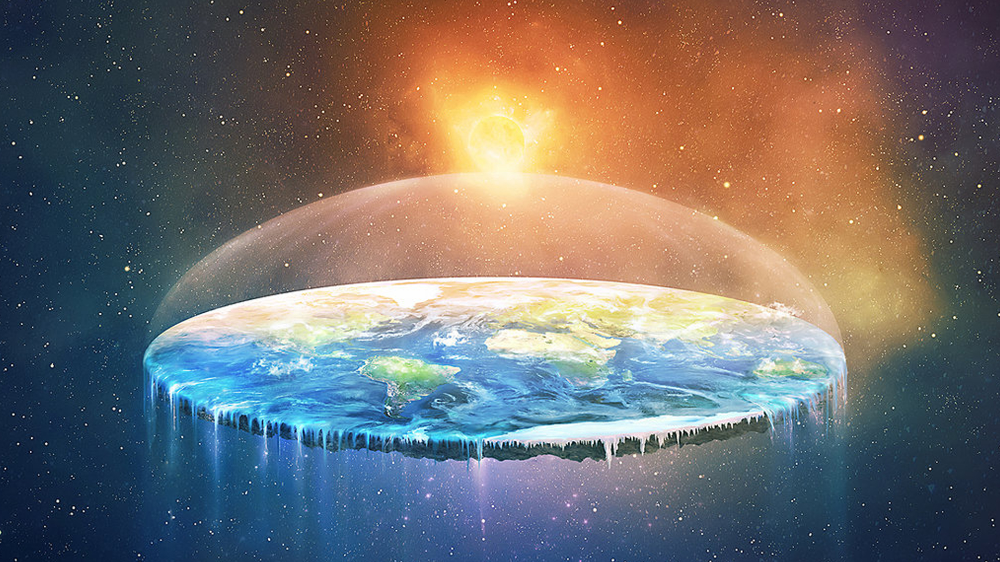

Thinking that the earth might be flat appears to have grown in popularity in recent years. Indeed, flat earthers are gathering for their annual conference this year in Birmingham, just two miles from my own university. But the earth isn’t flat. Unsurprisingly, this isn’t hard to prove. But as scads of YouTube videos demonstrate, these proofs fail to convince everyone. A glance at the comments show there’s still vitriolic disagreement in some quarters.

Philosophy can explain why. Consider one, standard, flat earth line: “Can you prove the world is round?” Maybe you point to the (often artificially assembled) photos of Earth from space. Or possibly you rely on the testimony of astronauts. The flat earther knocks it all back. The standard of proof is higher, they say. You haven’t been to space. You haven’t seen the round earth. Perhaps you then start to appeal to science. But unless you’re unusual, you probably don’t know all of the details of the scientific proofs – is it something to do with ships and horizons? Or eclipses? And even if you know the details, unless you’ve indulged existing flat earth literature you are unlikely – right here, right now – to be able to cogently, concisely and comprehensively respond to the lengthy rebuttals flat earthers will give to each and every scientific proof. You could double down. Getting knee deep in the vloggersphere, you might learn the details of the scientific proofs as well as painstakingly spelling out each error in every flat earther’s rebuttal.
I recommend against doing that. I recommend letting philosophy do the work. I recommend “epistemic contextualism”. To understand what this is, we first must understand a familiar idea: context shift. Consider the sentence “I’m tall”. Surrounded by five year olds at a rollercoaster park, the sentence is true – after all, I can get on all the rides and they can’t. But at the try-outs for the Harlem Globetrotters, my measly 5’11" won’t cut it. So in that context, the sentence is false. Tallness is contextually sensitive. And it makes no sense to further ask whether I’m really tall or not. It only makes sense given a particular context. Epistemic contextualists say that knowledge is the same. Imagine you’re transferring £10 to your daughter. You know her bank details. You tap them in. You send the money. But now imagine you’re transferring £50,000. Doubt sets in. Do you really know her bank details? Are you sure? Sensibly, you phone her to double check. The contextualist says that in the first case, you know her bank details. In the second case, even though nothing about you has changed, the context has. And in that case, you don’t know the details. Moving the goalposts That said, I claim the flat earther is doing a “Phoebe”. In one episode from Friends, Phoebe and Ross argue about evolution. Ross piles on the evidence thick and fast. Finally, Phoebe loses her temper. Can he be so unbelievably arrogant, she asks, that he can’t admit the slightest chance that he might be wrong? Sheepishly, Ross agrees that there might be a chance. Suddenly, Phoebe has him – Ross’s admission destroys his worldview. He’s a palaeontologist and, having admitted he can’t be sure about evolution, how can he “face the other science guys”? Phoebe has (humorously) shifted context. Ross’s proof starts off relying on fossils in museums, books and articles on evolutionary biology, and so on. But Phoebe moves him to a “sceptical context” in which if there’s a hint of doubt about something – any possibility that you might be wrong – then you don’t know it at all.